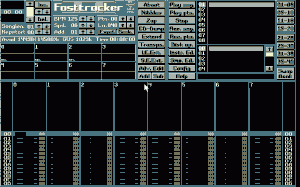
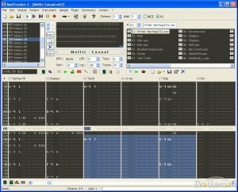

Old school: Lage musikk
No skal ikkje eg late som om eg verken kan lage musikk eller veit korleis dei proffe gjer dette i dag. Det eg derimot veit er korleis ein kunne gjere det før i "gamle dagar", ved hjelp av heftige datamaskiner som ein til dømes hadde såpass friske navn på som 486 DX2-66.
Poenget var at ein berre trengte eit enkelt lydkort, nokre spinkle høgtalarar, eit lite program og enten ferdige samples eller moglegheita til å lage desse sjølv.
Programmet Fasttracker II var ein såkalla tracker som kunne hjelpe deg med å sette saman samples (instrument) i ulike kanalar (0-7 under). Instrumenta, eller dei ulike samples, ligg i ei liste øverst til høgre. Du kunne legge til dynamiske lydkontrollar og andre meir avanserte effektar.


Dersom det virkar fjernt korleis i all verden dette kan bli til musikk så kan det kanskje hjelpe å sjå dette i aksjon - frå denne tilfeldige YouTube-videoen:
Formatet lydfilene blir lagra i er XM, som står for extended module. Du kunne og lagre i MOD-formatet, men her var det begrensningar på fire kanalar. Dei inneheld uansett alle samples og når dei skal bli avspelt - og treng spesielle tolkarar for å kunne lesast direkte. Alternativet til desse programma ein kan lage musikken i er eksempelvis altetande VLC og WinAmp. Det går og an å lagre resultatet i til dømes WAV eller MP3.
FT2 køyrte berre i DOS, så som eg kjem inn på seinare så treng du alternativ dersom du vil prøve i dag. Eit av desse er MadTracker.
Nokre eksempel
Min eigen karriere var kort og brutal. Etter kort tid med mange konsertar, mykje alkohol og knuste hotellrom så la eg inn årene. Karrieren til "YoBurner" og mange med-artistar, som "Birdman", var over midt på 90-talet.
Nokre utvalgte hits ligg på SoundCloud-sida mi.
Lenker til XM-filene kjem etterkvart som eg hentar dei fram frå arkivet.
Modarchive har mykje som er faktisk bra. Her kan du til dømes laste ned torrentar med tusenvis av låtar. Store moglegheiter for å sjå korleis flinke folk gjer det og finne samples å leike seg med, med andre ord.
"Eg vil og prøve!"
No til dags finnes det fortsatt dei som bruker liknande program, ofte for å lage chiptune-musikk - og avansert elektronika, for den slags skuld. Eit alternativ eg sjølv har brukt ein del er Fasttracker II-clone.


Eit anna alternativ som er oppgradert til meir nymotens krav er Renoise. Meir profesjonelle alternativ er Reason, Cubase og Pro Tools. Her snakkar me derimot litt andre prisklassar. Men, er du seriøs så er du seriøs.
Er du fattig finnes det moglegheiter for å leike seg litt online hos Looplabs.
Til slutt kan eg anbefale å høyre P3 Dokumentaren "Gutteromsrevolusjonen" som tek for seg litt rundt dette med elektronisk musikk i dag (2012), og korleis dette blir laga utan å ha masse pengar eller utstyr bak seg. Her finn du meir oppdaterte tips dersom du ikkje føler deg så veldig retro eller old school.